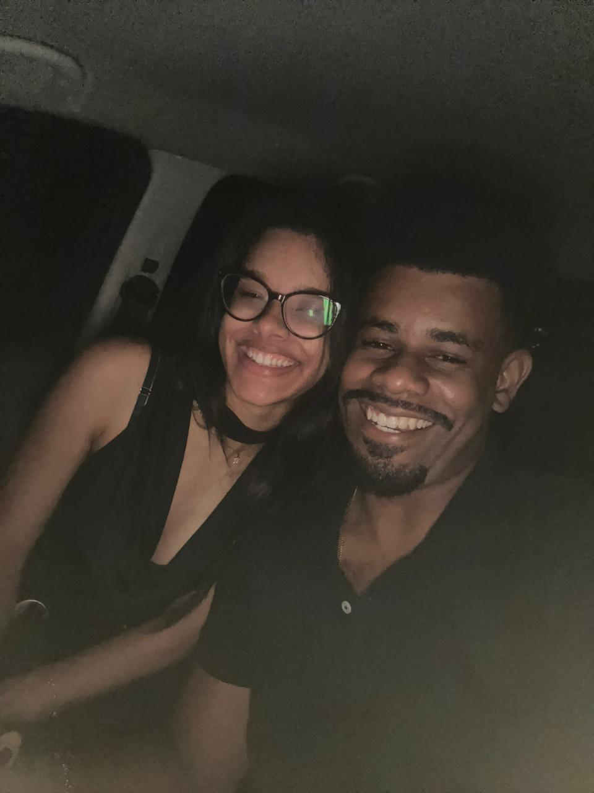
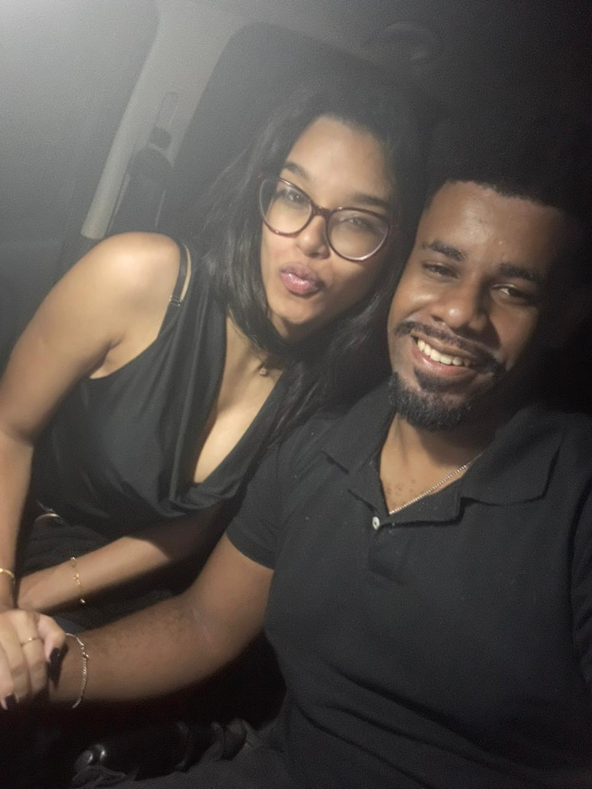
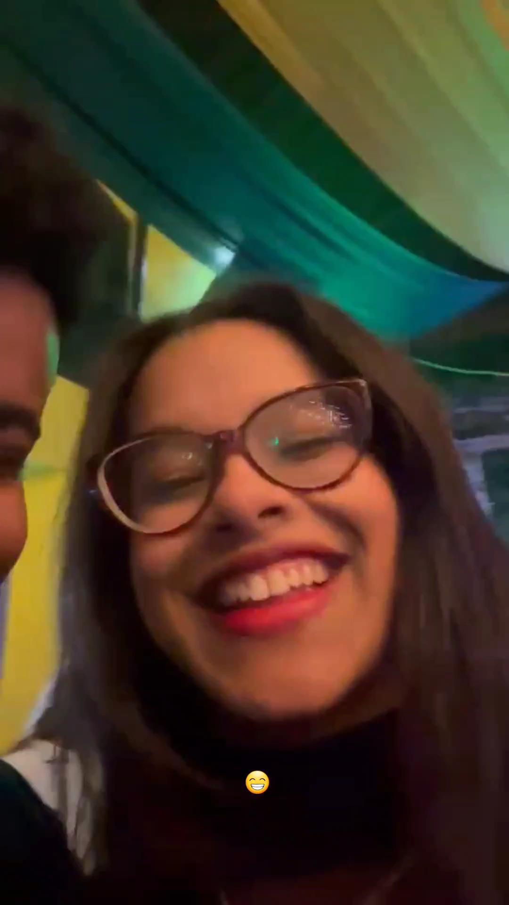
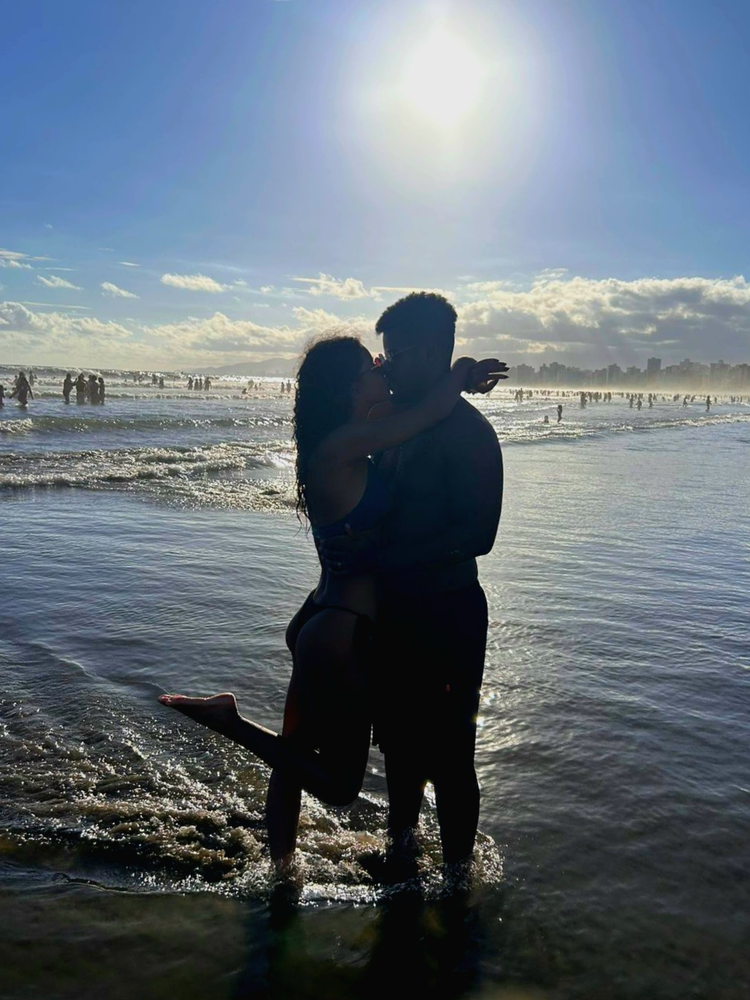
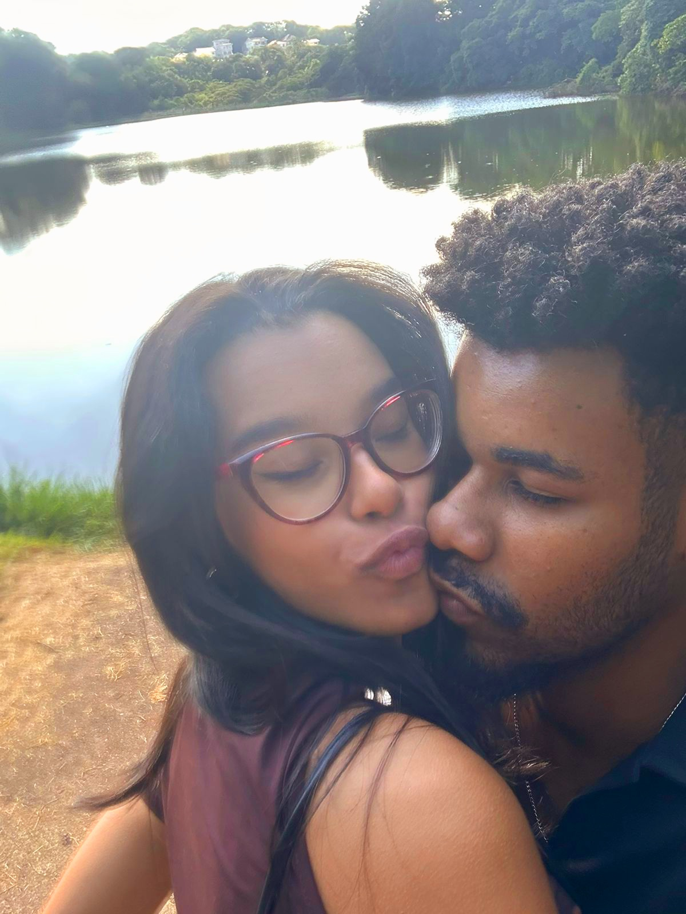
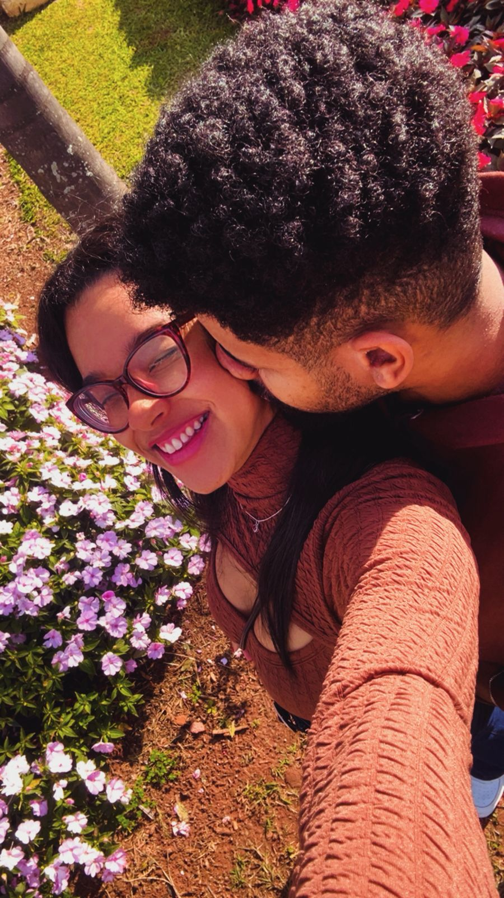

Jovem de 20 anos é oficialmente considerada "sem salvação" após sete meses de exposição contínua a um homem de 26 anos.
Tudo começou no fim de setembro, aparentemente de forma inocente. Dois desconhecidos se encontraram por aplicativo, acharam um ao outro interessante e começaram a conversar.
As trocas eram boas. Havia curiosidade. Havia interesse. Havia aquele "hmm, tem alguma coisa aqui".
Então, por motivos ainda não completamente esclarecidos, os dois se afastaram e ficaram meses sem se falar.
Investigadores classificam esse período como: "péssima decisão de ambas as partes".


Meses depois, o suspeito retornou ao local do crime.
Ele contou que tinha um amigo que precisava de ajuda: gostava muito de uma garota, mas os dois tinham parado de se falar. O amigo queria continuar conversando, talvez evoluir para alguma coisa, mas precisava descobrir se ela ainda queria falar com ele.
Após meses de investigação, nossa equipe confirmou a identidade do suposto amigo.
Olhares intensos. Conversas. Uma blusa comprada especialmente para a ocasião. E uma química que os investigadores consideram "suspeitamente perfeita".
O encontro se prolongou até a madrugada. Houve amassos quentes. O relógio avançou. A vontade de ir embora, aparentemente, não.
Nascia a teoria que seria repetida inúmeras vezes: "eu sou o encaixe perfeito, sem mais, nem menos, perfeita para você".
Os beijos continuaram encaixando. Os encontros aumentaram. E duas pessoas que tinham passado meses sem se falar começaram, convenientemente, a passar cada vez mais tempo juntas.
O terceiro encontro trouxe outro conjunto importante de provas: um pagode, uma Ashley tontinha e uma declaração profissional de carreira futura.
Também houve lágrimas. Muitas. E a frase que entrou para os arquivos históricos:

Investigadores ainda não sabem se se trata de uma mania ou de uma tentativa séria de arrancar o próprio ouvido. O caso permanece aberto.
Desde que Ashley apareceu, houve aumento significativo no consumo de doces após refeições salgadas. Coincidência? A ciência ainda investiga.
Deitou, dormiu. "Vou só descansar um pouquinho" foi considerado pelos peritos um dos maiores golpes já aplicados por uma cama.
As autoridades foram alertadas diversas vezes. O suspeito nega responsabilidade. As testemunhas, entretanto, são numerosas.
Ele dança de um jeito engraçado. O problema é que dança no ritmo. Ashley ri. O suspeito parece não se importar. Caso encerrado por falta de argumento.
"Você tem muito o que aprender ainda." · "Margarêêêtee." · "É tudo uma questão de tempo." — registros oficiais do relacionamento.
Vieram os filmes, séries, jantares na mesa, pagodes, parques, shoppings, cinemas, museus e exposições.
Vieram também as noites em que a cama traiçoeira venceu os dois, os cochilos no carro depois dos amassos e aquele amanhecer em que o tempo simplesmente passou.
E vieram os lugares que deixaram de ser apenas lugares porque agora carregavam uma história.

O primeiro encontro. Onde os olhares começaram a contar uma história que nenhum dos dois sabia ainda como terminar.
Chuva, conversa e uma daquelas trocas que fazem duas pessoas perceberem que não estão apenas passando tempo juntas — estão construindo alguma coisa.
A primeira viagem de casal. Dia dos namorados. Um capítulo que ganhou endereço próprio.

Ele já buscou Ashley na faculdade quando ela estava mal, ansiosa e sem ter dormido direito — até em dia de prova.
Já esperou ela vomitar no banheiro. Já cuidou dela quando estava sonolenta e bêbada. Já ficou acordado até tarde para conversar sobre conflitos, resolver discussões ou simplesmente fazer companhia quando o sono não vinha.
E, talvez mais importante: ele escuta.
Escuta, compreende, repreende quando necessário e participa das decisões da vida. É justamente nesse conjunto de pequenas coisas que uma relação deixa de ser apenas um romance e começa a se tornar um lugar seguro.

Depois de sete meses, nossa equipe percebeu que estava procurando a resposta no lugar errado.
Meu amor,
Dos seus 26 anos, eu tive a sorte de viver sete meses ao seu lado. E talvez sete meses pareçam pouco diante de uma vida inteira, mas, para mim, foram suficientes para me fazer perceber o quanto eu sou feliz por você ter nascido e o quanto me sinto sortuda por ter conhecido você.
Eu me sinto feliz quando estou ao seu lado, quando converso com você e quando a gente compartilha nossas decisões, nossos pensamentos e nossos planos para o futuro. Eu amo a forma como você me escuta, me compreende e também me repreende quando é necessário. Amo a nossa comunicação e a maneira como você pensa e lida com a nossa relação.
Sei que você talvez não ligue tanto para aniversários ou comemorações, mas, se dependesse de mim, o dia de hoje seria um feriado nacional. Porque eu acho que você merece ser celebrado — não apenas pelo que você é hoje, mas por tudo que ainda vai se tornar.
Eu torço pelo seu sucesso, pelas suas conquistas e por todos os seus sonhos. E também quero estar aqui quando as coisas não saírem como você espera. Quero comemorar suas vitórias e segurar sua mão nas derrotas.
Desejo que a sua caminhada seja cheia de felicidade, paz, harmonia e muita sabedoria. E desejo, principalmente, que a nossa caminhada continue sendo construída com tudo aquilo que já existe entre nós e com tudo aquilo que ainda vamos viver.
Você é forte, batalhador, guerreiro e vencedor de todas as guerras. É sábio, inteligente e, acima de tudo, respeitoso. E é por tudo isso — e por tantas outras coisas que provavelmente eu passaria horas escrevendo — que eu morro de amor por você.
Você é o homem da minha vida. E eu quero ser a mulher da sua vida daqui a mais sete meses, mais sete anos e por todos os capítulos que a gente ainda vai escrever.
Hoje eu só quero comemorar você. Não vejo a hora de te ver, te abraçar e poder dizer tudo isso olhando para você.
Feliz aniversário, meu preto. ❤️
Investigação concluída. O aniversariante foi considerado oficialmente culpado por fazer Ashley se apaixonar.
O conteúdo deste arquivo é confidencial e só pode ser acessado pelo aniversariante.
Porque uma investigação dessas jamais poderia terminar sem uma última prova. ❤️